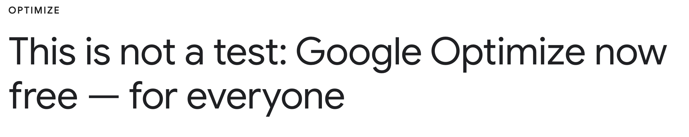
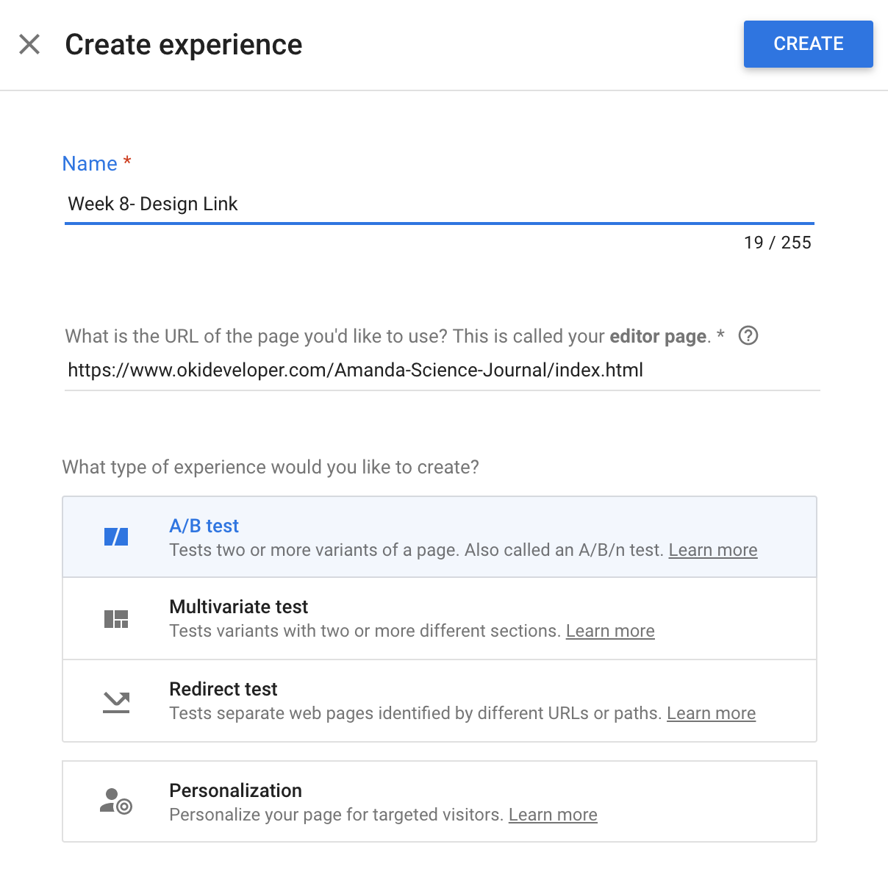
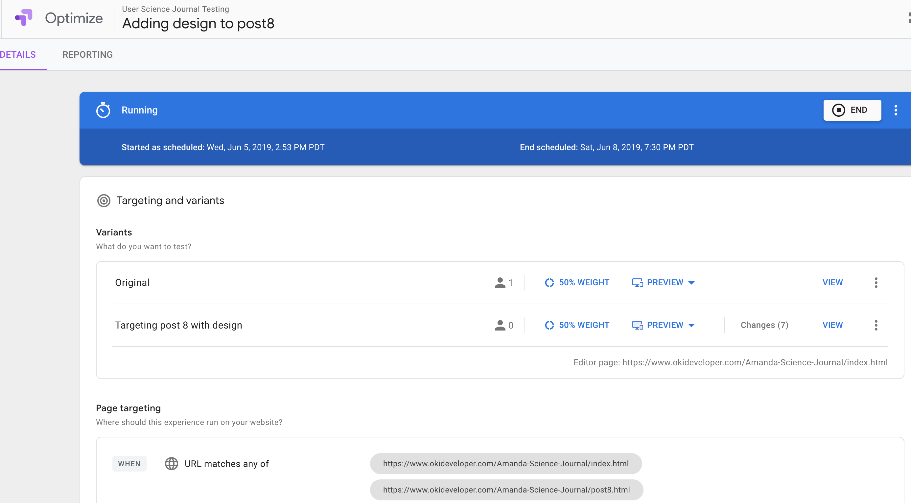
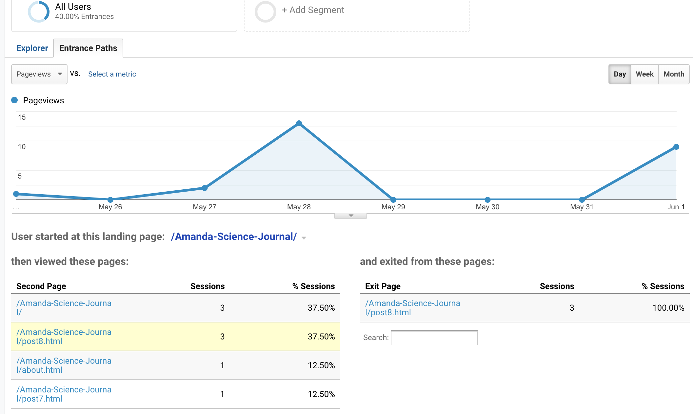
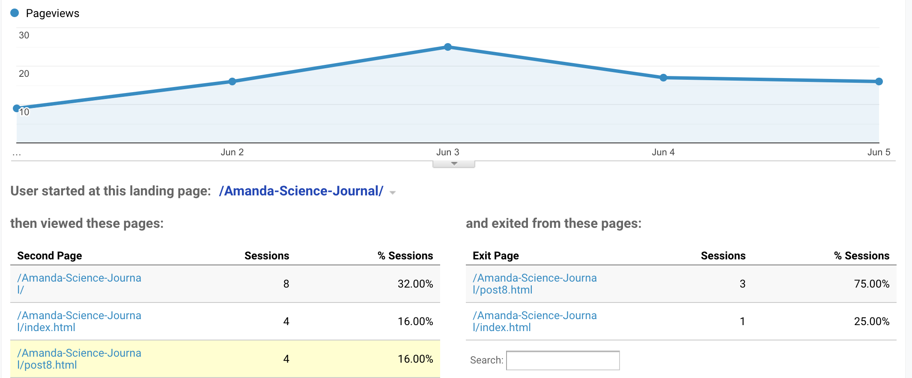

Welcome back to my blog!
Content Experiments
This week I will be focusing on my User Science Journal site experimenting with a feature from Google Analytics called Optimize. This tool allows me to modify a few things on a page or multiple pages to test for possible improvements. For a temporary time, those changes will be available for users to explore, they may not notice a difference, but I will notice from the data collected from their movements on my experiment site.
How it Works
I like using Google Optimize because it allows me to test the site, I have published by making some changes to see if that makes a difference in user traffic. I decided to continue my test from last week by trying to drive hits to my Cool Video Page. I added design and a description to one of the links on my weekly post list on the homepage of my User Science Journal. Hopefully this drive’s more users to my Week 8 Post about the History of the Internet including fun facts and a video.
This is my first test using Optimize, the change may be minor, but you would be surprised on the traffic it produces. Sometimes, all it takes is adding a POP of art to a link that directs them to a page that generates revenue for a business. This strategy is used a lot in marketing and is no stranger to web developers, our job is to make a website successful and easy to use.
A/B Testing
The first picture below is how I created the A/B test targeting one specific area on my site and that’s the design of the post 8 link, in hopes to drive more traffic to my Week 8 Page. In the second picture, it provides two views, the original default page as well as the page I edited. This than creates my experiment.
 Before Results
Below you see my Week 8 Post did not do so well in visits, this sometimes happens. This is when Google Analytics and the Optimize Tool really comes in handy, showing us that sometimes improvements need to be made.
After Results
After making some changes to the design, I was able to create more hits to my Post. I do see users clicking on the design link directing them to the next page, my Blog Post for Week 8. So, it is working!! Imagine if I had just 20 more users, than we would really notice a difference in data flow.
All in all, testing was easy to set up, but users were a struggle to gain. I will continue to test this page and get more hits providing us with more data to see if my POP of art helped my traffic. Until next week!
